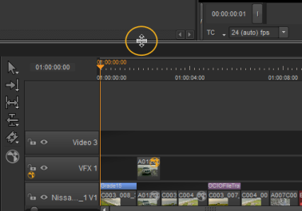

There are six default workspaces in Nuke/NukeX and Nuke Studio. By default, Nuke/NukeX opens in the Compositing workspace and Nuke Studio opens in the Finishing workspace. To change the workspace, you can do either of the following:
• Select Workspace from the top menu bar and then select the required workspace.
OR
• Use the keyboard shortcuts to open the required workspace. Press Shift and the required workspace keyboard shortcut, depending on mode:
|
Keyboard Shortcut |
Nuke/NukeX |
Nuke Studio |
|---|---|---|
|
Shift+F1 |
Compositing |
Conforming |
|
Shift+F2 |
LargeNodeGraph |
Editing |
|
Shift+F3 |
LargeViewer |
Reviewing |
|
Shift+F4 |
Scripting |
Timeline |
|
Shift+F5 |
Animation |
Finishing |
|
Shift+F6 |
Floating |
Compositing |
You can resize and split panes to make more room for different elements on the screen. To resize a pane, drag the divider line of the pane into a new location.

You can split a pane by clicking on the content menu button  in the top-left corner of the pane, and then selecting Split Vertical or Split Horizontal from the menu that opens.
in the top-left corner of the pane, and then selecting Split Vertical or Split Horizontal from the menu that opens.
NOTE: Pressing and holding the spacebar brings up the right-click menu for that pane, where available.
You can move the Toolbar into a new position by adding a new panel for it, hiding the panel name and controls, and resizing the panel. For more information on how to do this, see Adding Tabs, and Hiding Tab Names and Controls.
When you can’t fit more elements into your display, you can use tabs to save space. You can also use tabs to move the Toolbar into a new location.
You can add a tab by clicking on the content menu button  in the top-left corner of the pane, and then selecting the type of tab you want to add. For example, you can add Node Toolbar, Node Graph, New Viewer, or Script Editor. The new tab is added on top of the existing tabs.
in the top-left corner of the pane, and then selecting the type of tab you want to add. For example, you can add Node Toolbar, Node Graph, New Viewer, or Script Editor. The new tab is added on top of the existing tabs.
To move tabs, click on the name of the tab and drag it to a new position inside the same pane or in another pane.
You can close tabs again by clicking the X in the top-right corner of the tab you want to close.
NOTE: Closing a linked tab closes all associated tabs. If you hold Alt while closing a linked tab, it only closes that tab.
You can choose to solo a tab by either right-clicking on the tab name or clicking the content menu, and then selecting Solo Tab. This automatically closes any other open tabs in the same pane, except for the one you have chosen to solo.
You can turn tabs and panes into floating windows and vice versa. To turn a tab or pane into a floating window, click the content menu button  in the top-left corner in the tab or pane you want to float, and then select Float Tab or Float Pane. You can also float tabs by either clicking Ctrl/Cmd+click on the tab name, or right-clicking on the tab name and select Float Tab.
in the top-left corner in the tab or pane you want to float, and then select Float Tab or Float Pane. You can also float tabs by either clicking Ctrl/Cmd+click on the tab name, or right-clicking on the tab name and select Float Tab.
To change a floating window into a tab or pane, click on the tab or pane name in the floating window and drag it to where you want it to dock. You can close floating windows by clicking the X button in the top-right corner of the tab or pane.
To make a window fullscreen, first ensure the window you want to make fullscreen is active, and then press Alt+S. This could be the main application window or a floating Viewer. Making it fullscreen removes the window borders. You can also maximize tabs and panels by pressing spacebar.
You can hide the names and control buttons of tabs, as you may not need them with all panels, such as the Toolbar panel. To hide the names and controls on tabs, click the content menu button  in the top-left corner of the tab, and disable Show Tabs.
in the top-left corner of the tab, and disable Show Tabs.
You can show the names and controls on tabs again by moving the cursor over the top of the pane area until the top edge of the pane highlights, right-click to open the content menu, and select Show Tabs.
After you have customized a workspace and you are happy with it, you can save it by selecting Workspace > Save Workspace... You are then asked to name it. After saving it, your custom workspace appears in the Workspace dropdown under the existing default workspaces. Select it from the dropdown to load it.
Workspaces are saved in your .nuke file under Workspaces > Nuke or NukeStudio, depending on which Nuke mode you're currently using.
NOTE: The location of the .nuke file varies by platform. See Loading Gizmos, NDK Plug-ins, and Python and Tcl Scripts for more detailed information.
When you launch Nuke, it opens in the workspace set in the Preferences. You can change the startup workspace to any other default workspace or a custom workspace, by doing the following:
| 1. | Open the Preferences dialog by pressing Shift+S. |
| 2. | In the Behaviors section, select Startup. |
| 3. | Use the startup workspace dropdown to select the workspace you want Nuke to load on startup. |
|
|